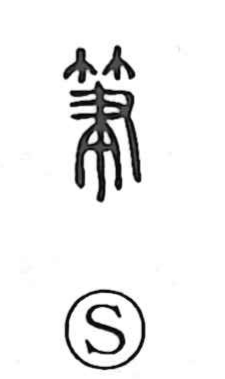

筆

Uncategorized
Kun: fude | On: hitsu
writing brush
Explanation
This character is built from 竹, bamboo, and 聿, the ancient figure of a hand (又) grasping a brush. 聿 was originally the sign for a writing brush itself; by adding 竹, the material from which brushes were commonly made, the graph specifies the bamboo-handled writing brush and, by extension, writing with it. From the very beginnings of the script, brush tools were already in use: oracle-bone inscriptions preserve strokes laid down in red cinnabar or black, and bronze texts were first drafted with the brush before casting. The term 刀筆 refers to the pairing of a writing brush with a small knife used to scrape corrections on bamboo or wooden slips, and 刀筆の吏 names the clerks whose work was devoted to writing.